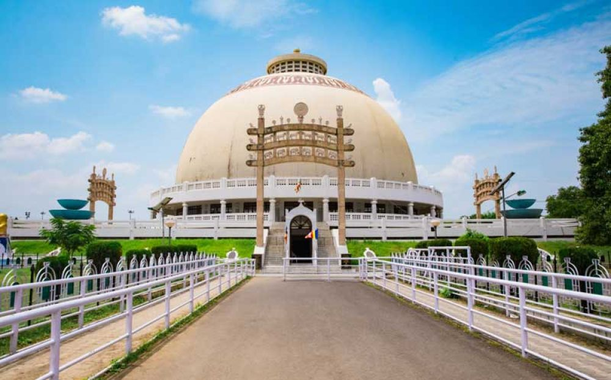
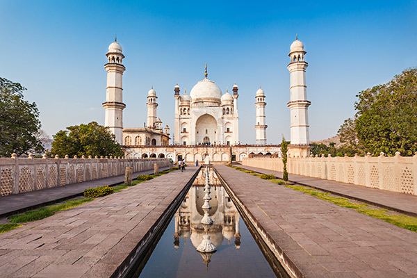

Ajanta-Ellora Caves, Aurangabad One of the finest examples of ancient rock-cut caves is Ajanta and Ellora Caves located in
Aurangabad. There are 29 Ajanta Caves and 34 Ellora Caves, all of which are designed beautifully
with paintings and intricately carved sculptures and it is one of the best historical places in
Maharashtra.
One of the finest examples of ancient rock-cut caves is Ajanta and Ellora Caves located in
Aurangabad. There are 29 Ajanta Caves and 34 Ellora Caves, all of which are designed beautifully
with paintings and intricately carved sculptures and it is one of the best historical places in
Maharashtra.
The caves are surrounded by dense forests, and the view outdoors as well as within the caves, is definitely one that you’ll fall in love with. An important site here is the Kailash Temple, the single largest monolithic structure in the world. All this makes the Caves a UNESCO World Heritage site. |
Gateway of India, Mumbai Renowned as one of the most iconic structures of India, Gateway of India, was constructed
along the Mumbai Harbour in 1924. Located at the tip of Apollo Bunder, this massive structure
represents a commemorate memorial.
Renowned as one of the most iconic structures of India, Gateway of India, was constructed
along the Mumbai Harbour in 1924. Located at the tip of Apollo Bunder, this massive structure
represents a commemorate memorial.
It was constructed in honour of King George V and his wife Queen Mary when they were on their tour to India. Once a grandeur of the British settlement, this famous tourist spot today pulls food stallers, vendors, nature lovers, and photographers to adore its charm.It is from here that you can board the boats to sail to the Elephanta Caves. |
Shaniwar Wada, Pune Shaniwar Wada is an excellent example of the Maratha Imperial architecture used in India in
the bygone era. It tells the historical tale of the Maratha Kingdom as it has seen every event
that occurred in Peshwas Life over time.
Shaniwar Wada is an excellent example of the Maratha Imperial architecture used in India in
the bygone era. It tells the historical tale of the Maratha Kingdom as it has seen every event
that occurred in Peshwas Life over time.
It was built by the Peshwas’ symbolizing the brave hearts of the Marathas, who strived hard to keep its glory alive. Though the fort couldn’t tolerate the battering the stone boundaries still recite the untold tales of the colourful journeys lead by the heroic Marathas.he walls have a magnificent wooden gate reflecting the Mughal architecture. |
Raigad Fort, Raigad At a height of 2690 feet, is this fort that symbolises historical places in Maharashtra and
boasts of Maratha victory. The fort is surrounded by steep lush valleys on three sides, and the
fourth one sees a series of steps leading up to it. It was primarily for this reason that it
could never be conquered by the enemies and its one of the best historical places in
Maharashtra.
At a height of 2690 feet, is this fort that symbolises historical places in Maharashtra and
boasts of Maratha victory. The fort is surrounded by steep lush valleys on three sides, and the
fourth one sees a series of steps leading up to it. It was primarily for this reason that it
could never be conquered by the enemies and its one of the best historical places in
Maharashtra.
The fort isn’t just a tourist spot, but a sacred spot that redefined Hindu Swarajya. Shivaji Maharaj named the Raigad Fort the capital of the Maratha kingdom and presided over. His remains are buried close by. |
Lohagad Fort, Khandala Resting on top of a hill, 3400 feet high, the Lohagad Fort is a UNESCO World Heritage Site,
known for its perfect blend of architecture and natural beauty. The trek to the fort is an easy
one, which makes this point a favourite among first-time trekkers and nature lovers too and it
is one of the famous monuments in Maharashtra.
Resting on top of a hill, 3400 feet high, the Lohagad Fort is a UNESCO World Heritage Site,
known for its perfect blend of architecture and natural beauty. The trek to the fort is an easy
one, which makes this point a favourite among first-time trekkers and nature lovers too and it
is one of the famous monuments in Maharashtra.
History says that Shivaji Maharaj used to hide his treasury in the fort when the Marathas ruled over it. For this reason, and for the abundant beauty around the fort. |
Pratapgad Fort, Satara Pratapgad is a mountain fort located in Satara district, in the Western Indian state of
Maharashtra. The fort is situated 24 kilometres from the Mahabaleshwar hill station. The fort is
now a popular tourist destination.The fort was constructed on a hilltop, about 1,080 meters
above sea level, offering stunning views of the surrounding landscapes. There are two main
entrances to the fort, and the fort's gates are protected by high walls.
Pratapgad is a mountain fort located in Satara district, in the Western Indian state of
Maharashtra. The fort is situated 24 kilometres from the Mahabaleshwar hill station. The fort is
now a popular tourist destination.The fort was constructed on a hilltop, about 1,080 meters
above sea level, offering stunning views of the surrounding landscapes. There are two main
entrances to the fort, and the fort's gates are protected by high walls.
It is divided into two parts – the lower fort and the upper fort. while the upper fort contains temples, a modern statue of Shivaji Maharaj, and several buildings. |
Deekshabhoomi, Nagpur Deekshabhoomi is in Nagpur, Maharashtra, a location regarded as a sacred place, prernabhoomi (inspiring land) of social revolution being atheist and a preparations for social actions against class conflicts, discrimination, inequality also the first pilgrimage center of Ambedkarite Buddhism in India.The site today is revered as a pilgrimage destination, especially on Ashoka Vijayadashami.At the heart of Deekshabhoomi stands a grand stupa, inspired by the Sanchi Stupa, representing peace and harmony. The monument is managed by the People’s Education Society, and its architecture reflects a blend of Buddhist and modern Indian styles. |
Bibi-Ka-Maqbara, Aurangabad Bibi Ka Maqbara, located in Aurangabad, Maharashtra, is a beautiful Mughal-era mausoleum built in memory of Dilras Banu Begum, the wife of Mughal Emperor Aurangzeb. It was commissioned in 1660 by their son Prince Azam Shah as a tribute to his mother. Due to its striking resemblance to the Taj Mahal in Agra, it is often referred to as the "Taj of the Deccan."Despite being less grand than the Taj Mahal, Bibi Ka Maqbara has its own charm and historical significance. The mausoleum is surrounded by a beautiful garden with water channels and fountains, following the Charbagh style.t attracts thousands of tourists and history enthusiasts every year. The backdrop of the surrounding hills adds to its scenic beauty. |
Ambernath Shivalaya, Ambernath Ambernath Shivalaya, also known as the Ambreshwar Shiva Temple, is an ancient 11th-century temple dedicated to Lord Shiva, located in Ambernath, Maharashtra. Constructed in 1060 AD by King Chhittaraja of the Shilahara dynasty and possibly completed by his son Mummuniraja, the temple exemplifies the Bhumija architectural style, a unique design. Situated on the banks of the Waldhuni River, the temple features a sanctum sanctorum (garbhagriha) located below ground level, accessible via approximately 20 steps.
Ambernath Shivalaya, also known as the Ambreshwar Shiva Temple, is an ancient 11th-century temple dedicated to Lord Shiva, located in Ambernath, Maharashtra. Constructed in 1060 AD by King Chhittaraja of the Shilahara dynasty and possibly completed by his son Mummuniraja, the temple exemplifies the Bhumija architectural style, a unique design. Situated on the banks of the Waldhuni River, the temple features a sanctum sanctorum (garbhagriha) located below ground level, accessible via approximately 20 steps.
the temple's shikhara (spire) remains incomplete, leading to local beliefs that the structure was built overnight by the Pandavas during their exile, which also ties into the etymology of 'Ambernath'—'Lord of the Sky' |